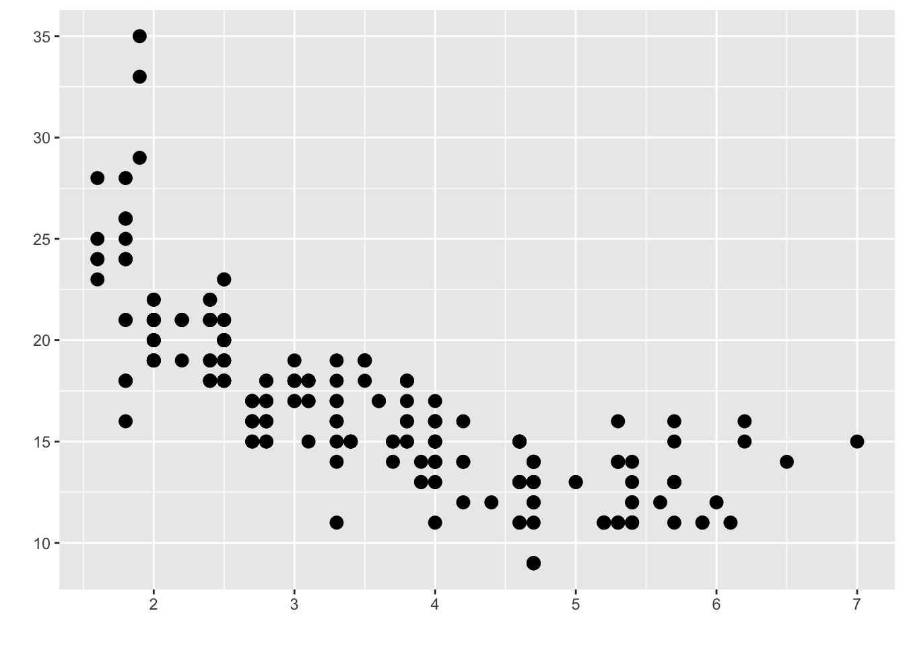
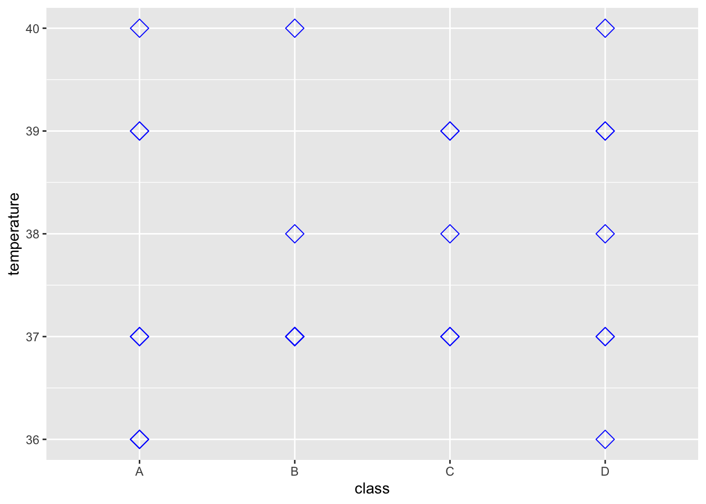
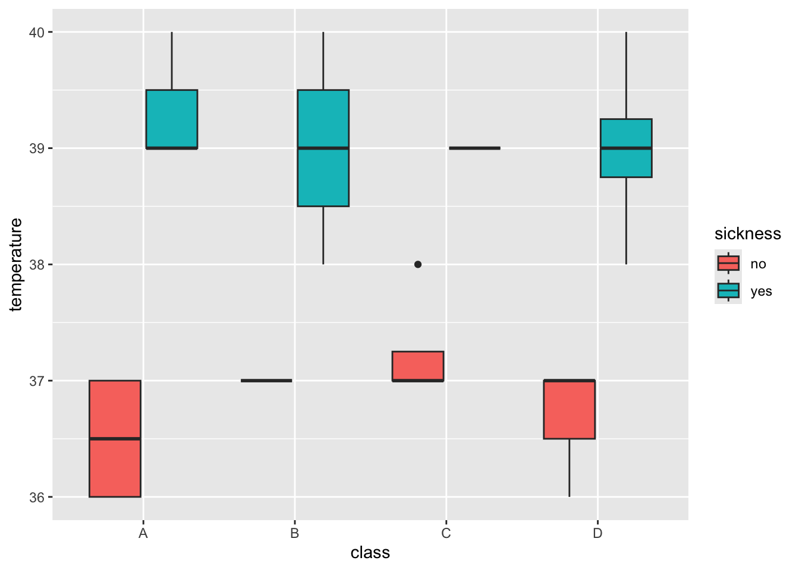
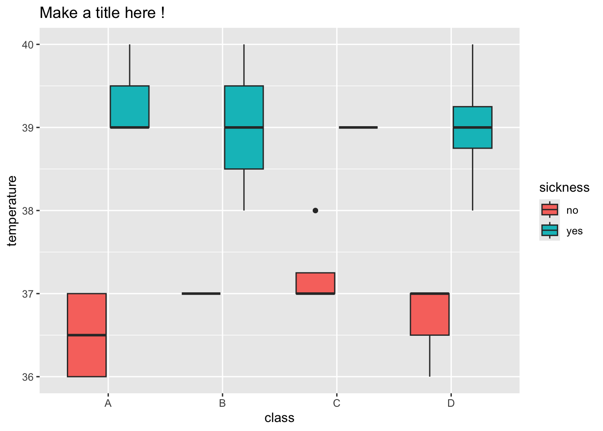

Chapter 5 Working through a dataset
5.1 Solving an outbreak!
We first need to load in the packages that we will be using and our data.
üîç What are packages?
One of the great things about R is that there are lots of pre-installed commands that we can access or ones that others help to create and we can access. These are our packages that we access with the library() command.
Packages can help us inspect our data using simpler language. We are using the packages tidyverse Wickham et al. (2019) and ggmap Kahle, Wickham, and Jackson (2023).
üí° If library(tidyverse) or library(ggmap) is not working, then the packages may not be installed. To do this, simply run install.packages(c("tidyverse", "ggmap")) in the console or in the code chunk.
5.2 What does outbreak_data look like ?
The number one step in data analysis is looking at the data we have to work with. For this, we are going to use our first pre-installed command called colnames().
[1] "firstname" "class" "height" "weight" "age" "sex" "temperature"
[8] "sickness" "shortness_of_breath" "chills" "palpitation" "bloody_stools" "pain_chest" "abdominal_cramps"
[15] "dizziness" "nausea" "vomiting" "vertigo" "cough" "fever" "diarrhea"
[22] "constipation" "headache" "pain_abdominal" "throat_sore" "muscle_pains" - Can you find
outbreak_datain the environment pane? - What happens if you click on it there?
5.3 Different kinds of data
In outbreak_data we have several kinds of information and it’s important to identify what these are !
How would you describe what data we have in
Firstname?How is this different to
Weight?What are some terms we could use to define these ?
To look specifically at one column we can select the column using a pipe or %>%.
# A tibble: 29 × 1
height
<dbl>
1 61.7
2 60
3 60.5
4 61.7
5 62
6 62.3
7 60.9
8 60.3
9 62.7
10 61
# ℹ 19 more rows5.4 Visualising data
The types of data we have to work with will determine how it is best to visualise !
A scatter plot:

Notice both the x and the y-axis are things we can count or measure.
A boxplot:

Notice the y-axis are things we count or measure but the x-axis are specific groups.
5.5 Plotting our data
We will be using a function called ggplot(). This is a fantastic tool we can use to make amazing graphs !
Like any graph we need to decide:
- What do we want on the x-axis?
- What do we want on the y-axis?
- What kind of graph do we want to make?
Other ideas like colour, design, groups … we’ll get to this later!

These are both pieces of data represented by numbers - how else might we record data?
5.6 Let’s customise!
Can you change size, shape and colour…what kinds of plots can you make ?
> ggplot(data = outbreak_data,
+ aes(x = class, y = temperature))+
+ geom_point(size = 4, shape = 5, colour = "blue")
5.6.1 Boxplots to create summaries
Can you make a boxplot with Class on the x-axis and Temperature on the y-axis? A boxplot summarising temperature in the four classes.

üí° Boxplots provide us with an informative summary of the data in our groups - The center line gives the median - the box below is 25% of the data below the median and the box below is 25% of the data above
üí° If we don‚Äôt know what R is doing, we can always get help !
5.6.2 How can we use fill to learn more ?
The fill can be specified as aesthetics like the x and y axis.
Can you specify the fill with our Sickness information about each student ?
> ggplot(data = outbreak_data,
+ aes(x = class, y = temperature, fill = sickness)) +
+ geom_boxplot()
5.6.3 What does temperature tell us about how the students were feeling?
Were the temperatures the same for students who were sick and those who weren’t
Where the sick students in all classes
Why do people get a temperature when they get sick?
5.6.4 Time to give our plot a title
> ggplot(data = outbreak_data,
+ aes(x = class, y = temperature, fill = sickness))+
+ geom_boxplot()+
+ labs(title = "Make a title here !")
Make it something informative that describes the plot you’ve just made and why people would be interested to look at it
5.7 Generating summaries
This symbol %>% is used to send our data into another command such as summarise().
As the name would suggest, we can generate summaries, such as calculating the median.
# A tibble: 1 × 1
median
<dbl>
1 37üí° We can also calculate other summary statistics in R. Such as:
outbreak_data %>% summarise(median_age = median(age), min_age = min(age), max_age = max(age), mean_age = mean(age))
5.8 We can also use group_by() with multiple groups
Just like our boxplot, we want to know the median temperature of the students, grouped by their Class and Sickness status. Try to do this by adding group_by(Class, Sickness).
`summarise()` has grouped output by 'class'. You can override using the `.groups` argument.# A tibble: 8 × 3
# Groups: class [4]
class sickness median
<chr> <chr> <dbl>
1 A no 36.5
2 A yes 39
3 B no 37
4 B yes 39
5 C no 37
6 C yes 39
7 D no 37
8 D yes 39 How can we relate this to the boxplot we made earlier ?